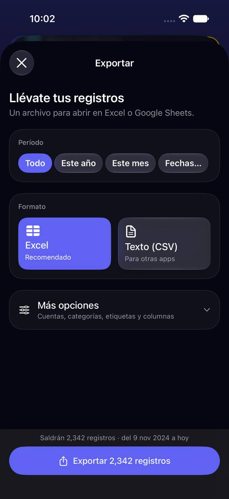
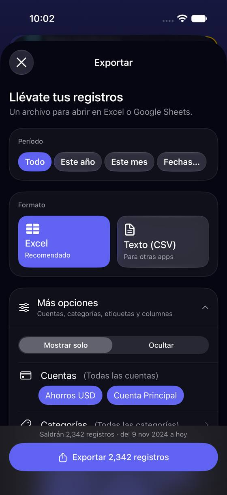
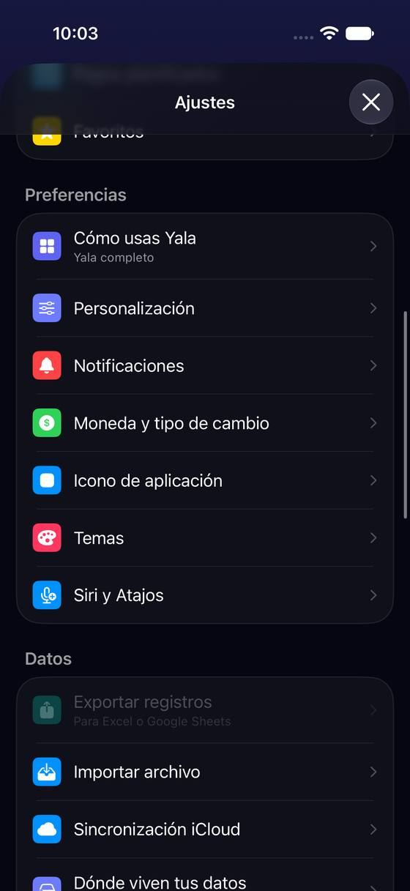

Exportar abre en «Todo» (2.342 registros), sin «Mes pasado» y sin poder pedir solo los gastos
Hoy
Capturas del simulador (app de origin/2.3, semillas de prueba). Pasos hoy: gastos de octubre: avatar › Exportar › Fechas… (elegir 1 y 31 de octubre) › Más opciones › Categorías › quitar Ingresos › Exportar: unos 10 toques y 2-3 deslizamientos (las fechas, contadas en el código)




De dónde sale
- Captura Capturas d01-d02: período Todo / Este año / Este mes / Fechas…; 10 interruptores de columnas.
- Código
ExportFilters(TransactionsExportService): cuentas, categorías, subcategorías, etiquetas, monedas, importe, fechas, nota y necesidad; ningún filtro por tipo de registro. - Código
ProfileView.swift:527-536: sin registros la fila se apaga y el motivo va solo enaccessibilityHint. - Captura Capturas d03: en el plan gratis la hoja es igual (exportar no es de Pro).
Las opciones
De 3 a 5 alternativas con el mismo caso. Desliza cada recorrido; el anillo cian marca dónde toca Andrea.
«Mes pasado» y «Qué registros» a la vista, con la frase de lo que sale
El período suma «Mes pasado», el más pedido para un contador. Debajo, una fila «Qué registros»: Todos · Solo gastos · Solo ingresos, que hoy no existe (solo se puede filtrar por categorías, dentro de Más opciones). La frase de abajo dice lo que va a salir con palabras: «Saldrán 184 gastos de octubre».
A favor
- El caso del contador queda en 5 toques sin abrir «Más opciones» (hoy, unos 10).
- «Solo gastos» no existe hoy: hoy hay que quitar «Ingresos» en Categorías.
- El nombre del archivo dice período y tipo.
En contra
- Una fila más en la hoja.
- Hay que decidir qué hacen las transferencias en «Solo gastos» (fuera, como en Estadísticas).
Plantillas: «Para tu contador», «Copia completa», «A tu medida»
La hoja empieza preguntando para qué es. Para tu contador = mes pasado, solo gastos, Excel, columnas de fecha, monto, categoría y nota. Copia completa = todo, todas las columnas (para guardar o pasar a otra app). A tu medida = la hoja de hoy.
A favor
- El caso más común en 3 toques.
- «Copia completa» deja claro cómo llevarse todo antes de vaciar datos.
En contra
- Una capa más para quien quería afinar.
- Las columnas de la plantilla del contador son una opinión nuestra.
Exportar lo que ves en Registros
En Registros, con el período y los filtros puestos (zona 31), el menú «···» suma «Exportar estos 184», que abre la hoja de Exportar ya con ese período y esos filtros. Ajustes › Exportar sigue igual.
A favor
- Exporta exactamente lo que la persona ya está mirando.
- Reutiliza filtros que ya existen.
En contra
- Depende de cómo quede el filtrado de Registros (zona 31, F2).
- No ayuda a quien empieza por Ajustes.
Decir por qué no se puede exportar (complemento barato)
Sin registros, la fila «Exportar registros» hoy sale gris y sin explicación (el motivo solo lo oye VoiceOver). Pasa a decirlo debajo: «Aún no tienes registros. Puedes importarlos de un Excel» con el enlace a Importar.
A favor
- Es un texto: se hace en minutos.
- Lleva a la acción útil (importar).
En contra
- Solo cubre el caso vacío.
Lado a lado
La última pantalla de cada recorrido, frente a hoy.
Comparación
| Opción | Pasos para el caso (maqueta) | Esfuerzo | Riesgo | Reabre |
|---|---|---|---|---|
| Hoy | gastos de octubre: avatar › Exportar › Fechas… (elegir 1 y 31 de octubre) › Más opciones › Categorías › quitar Ingresos › Exportar: unos 10 toques y 2-3 deslizamientos (las fechas, contadas en el código) | — | — | — |
| D1 · «Mes pasado» y «Qué registros» a la vista, con la frase de lo que sale | Gastos de octubre en Excel: 5 toques (avatar › Exportar › Mes pasado › Solo gastos › Exportar) y 1 deslizamiento | bajo | bajo | — |
| D2 · Plantillas: «Para tu contador», «Copia completa», «A tu medida» | Gastos de octubre en Excel: 4 toques (avatar › Exportar › Para tu contador › Exportar) y 1 deslizamiento | medio | bajo | — |
| D3 · Exportar lo que ves en Registros | Con octubre ya filtrado: 3 toques (··· › Exportar estos › Exportar) | medio | medio | — |
| D4 · Decir por qué no se puede exportar (complemento barato) | — | bajo | bajo | — |
Lente de perfiles
Perfiles simulados, no entrevistas Los siete perfiles de la revisión del usuario nuevo, usados como lentes. riesgo alto de trabarse · medio · bajo.
| Perfil | Hoy | D1 | D2 | D3 | D4 |
|---|---|---|---|---|---|
| P1 · Migrante de Excel | quiere su mes en Excel | lo que haría en Excel | — | filtra y exporta | importa de Excel |
| P2 · Principiante abrumado | «Mostrar solo / Ocultar» | palabras claras | elige un propósito | tiene que filtrar antes | entiende por qué |
| P3 · Anotador rápido que no lee | exporta «Todo» | pocos toques | un toque | — | — |
| P4 · Experto de otra app | falta tipo | — | una capa más | lo esperado | — |
| P5 · Llega por una invitación de grupo | exporta grupos aparte | — | — | — | — |
| P6 · Varias monedas y tarjeta | ¿monedas? | ¿y en dólares? | — | — | — |
| P7 · Texto grande, a veces en iPad | 3 pantallas de filtros | sin Más opciones | tres botones | menú «···» | lo oye y lo ve |
Recomendación: D1
«Mes pasado» y «Qué registros» resuelven el caso en cinco toques sin capas nuevas y sin tocar lo que ya funciona; D4 va con ella porque es un texto. D2 (plantillas) es mejor para el caso del contador, pero añade una pregunta a todos; D3 vale cuando Registros tenga su filtrado nuevo (zona 31).
Qué decide Jürgen
- ¿«Mes pasado» en el período y una fila «Qué registros» (D1)? ¿Las transferencias salen en «Solo gastos»?
- ¿Plantillas (D2) en lugar de lo anterior?
- ¿El motivo de la fila apagada, a la vista (D4)?
Revisión por vistas 2.3 · Perfil, Más, Ajustes generales, Pro y ayuda. Maquetas en HTML con datos ficticios: no son la app. Pasos contados sobre las maquetas; los de «Hoy», en el simulador o en el código citado.